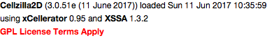
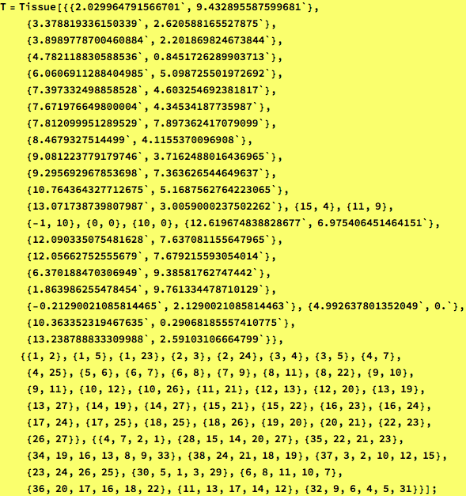
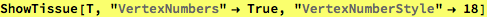
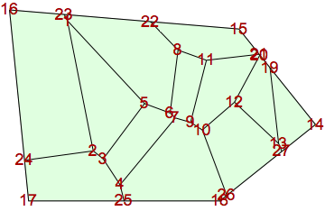
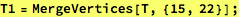
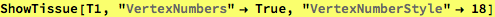
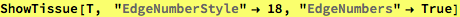
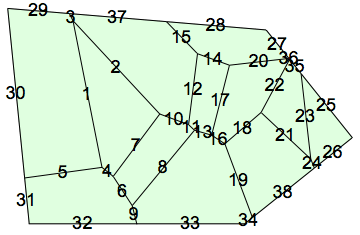
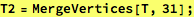
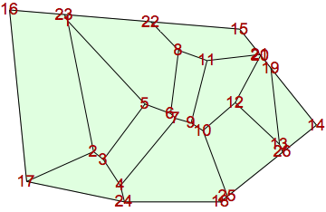

MergeVertices-example.nb
Example Cellzilla2D notebook
GPL License applies.
See http://xlr8r.info and http://cellzilla.info for further details.

Define a tissue

Merge two vertices by referencing the vertex number




Merge two vertices by referencing an edge between them



